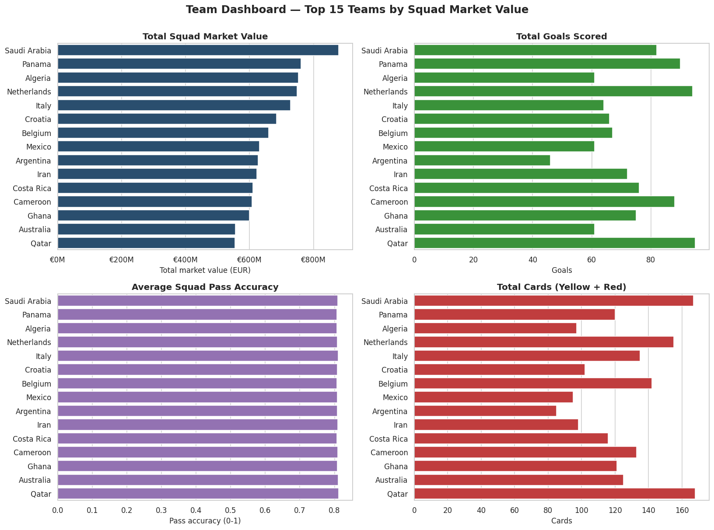
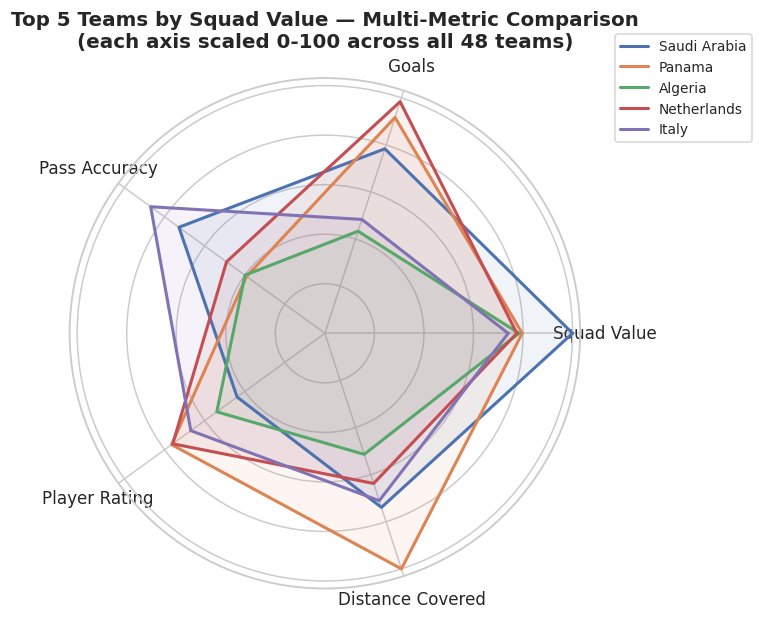
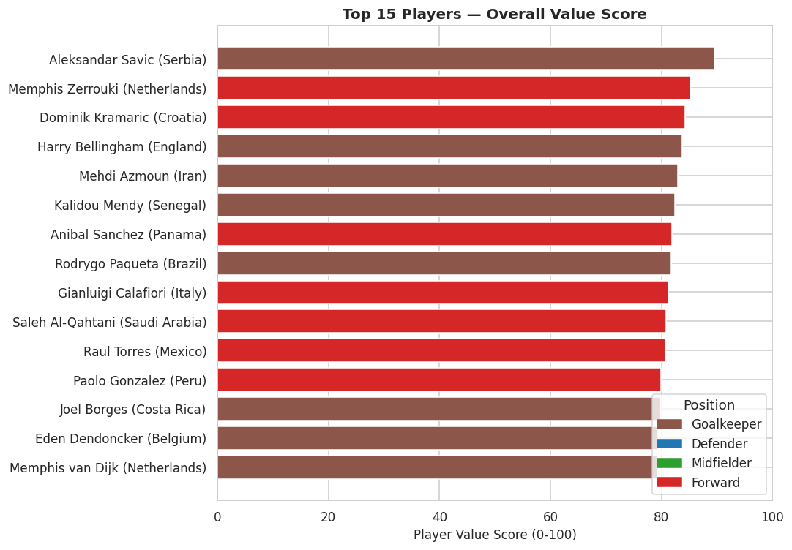
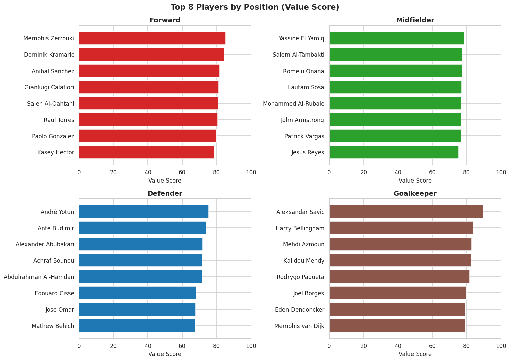
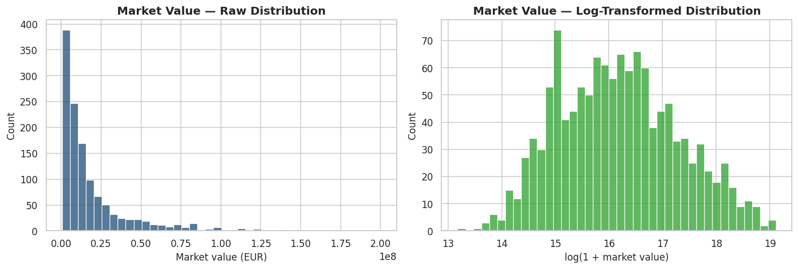
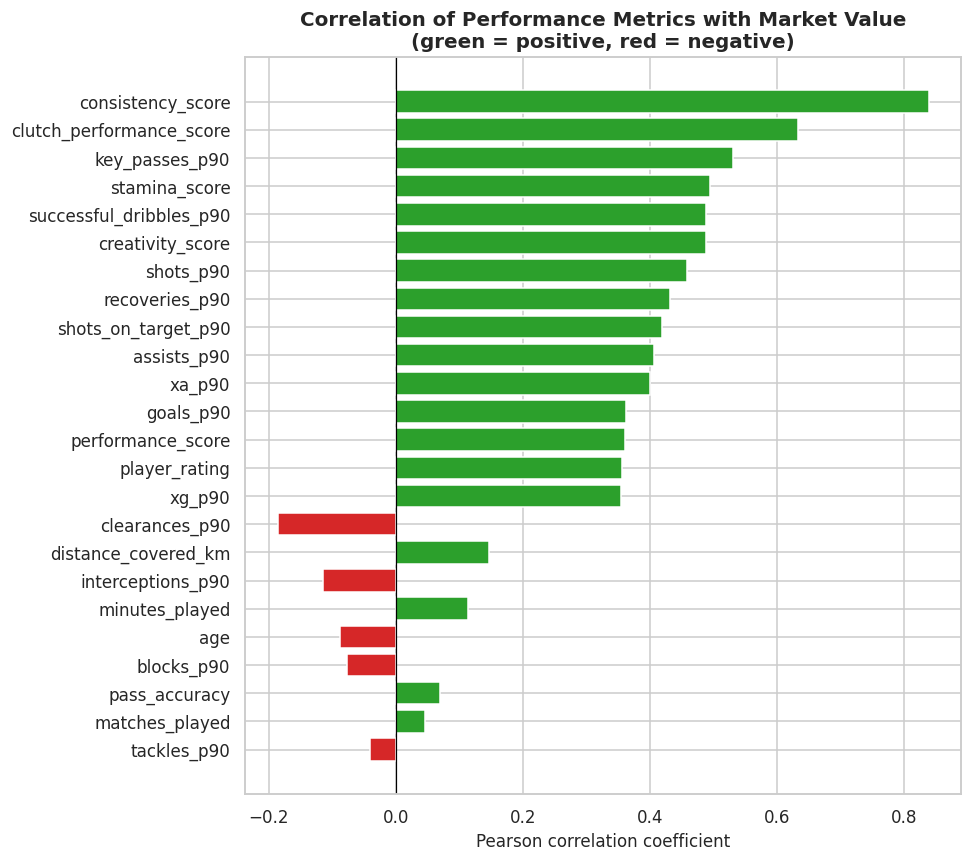
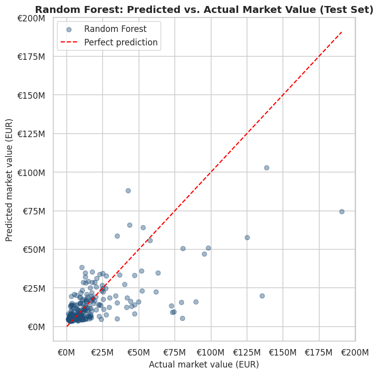
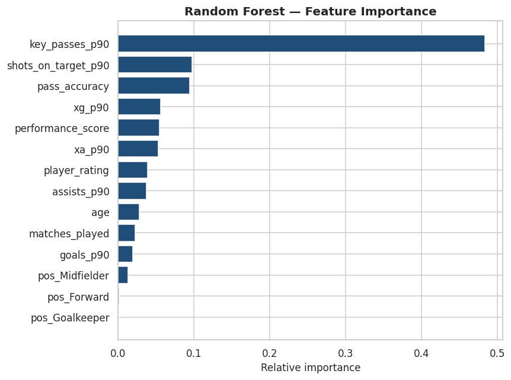
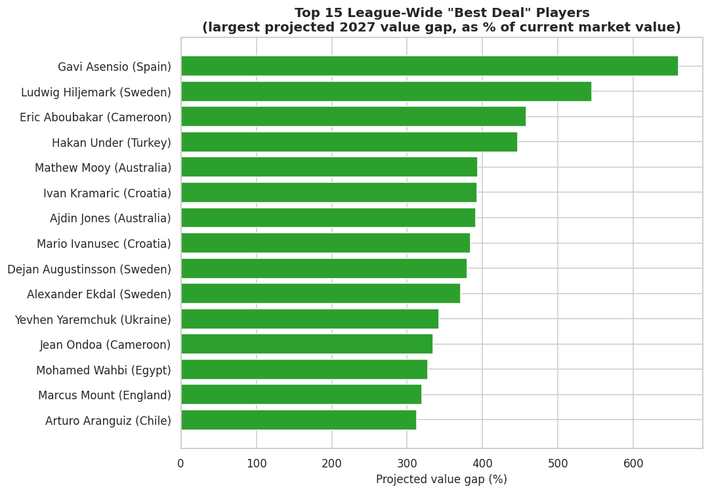
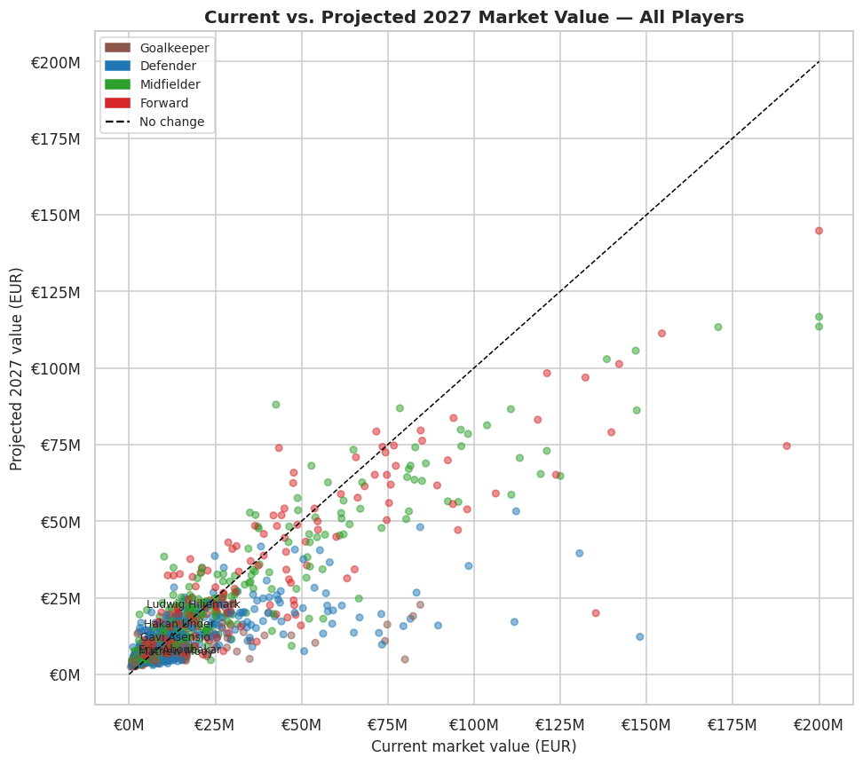

⚽ FIFA World Cup 2026: Team & Player Value Research Dashboard
A fully-worked research notebook built so that every step is explained, not just run. Each section below pairs the chart it produced with a short plain-English summary of what it shows and why it was built that way.
Data Quality First
The raw dataset has one row per player per match, so a player who played every game appears dozens of times. Before aggregating anything, the notebook checks whether the dataset's own pre-built "tournament total" columns can be trusted. They couldn't — the totals didn't reliably match a manual sum of the match-level rows. So every player and team statistic used from this point on was rebuilt directly from the raw match data, collapsing ~54,600 match rows into 1,248 player rows and 48 team rows, so every number is traceable back to its source.
Team Dashboard
A "dashboard within the dashboard" comparing all 48 squads on attacking output, discipline, physical profile, and squad value. The radar chart normalizes five very different metrics (goals, market value, pass accuracy, etc.) onto the same 0–100 scale so the top 5 teams can be compared at a glance. A live version also lets you pick any team from a dropdown and see it plotted against the tournament average — that part needs a running notebook kernel, so it isn't shown here.


Player Value Score — Methodology
Rather than ranking players by raw goals or the dataset's own rating, this notebook builds a transparent Value Score from scratch. Stats are converted to per-90-minute rates first, so a player who only played 800 minutes isn't penalized against one who played 1,700. Those rates are then converted to percentile ranks within each position group — a defender is judged against other defenders, not against forwards — and combined using position-specific weights (goalkeepers get their own simplified formula). As a sanity check, the resulting score correlates positively with the dataset's own player rating, which is reassuring evidence it's measuring something real.
Top Players Leaderboard
With a defensible Value Score in hand, the leaderboard is shown two ways: an overall top 15 across the whole tournament, and a per-position breakdown, since comparing a goalkeeper's score directly against a forward's is only meaningful relative to their own peers.


What Drives Market Value?
Market value is heavily right-skewed (a handful of superstar valuations stretch the scale), so it's log-transformed before running correlations — this turns a lopsided distribution into a much more symmetric one, which is what a linear correlation or regression assumes. Pearson correlation is then used to see which performance stats move together with market value the most.


Top strongest correlates of market value:
Attacking output and overall match rating showed the strongest positive relationship with market value — consistent with how transfer markets behave in real football, where visible end-product tends to get rewarded more than unglamorous defensive work. Correlation isn't causation, though, and position is a likely confounding variable worth controlling for separately.
Predicting 2027 Market Value
Two regression models — Linear Regression and a Random Forest — were trained on performance stats to learn the relationship with current market value, evaluated on a held-out test set so the score reflects how well the model generalizes, not just how well it memorized the training data. Worth being upfront about a limitation: this dataset is a single tournament snapshot, so this is a "performance-implied value," not a true year-over-year forecast.


Finding the Best Deals
Each player's projected 2027 value is compared against their current market value as a percentage gap rather than a raw euro difference — a €5M gap means very different things for a €2M player versus an €80M player, and percentage puts every price tier on a level playing field.


Key Findings
- The dataset's pre-built tournament totals didn't reliably match totals computed from raw match rows, so every aggregate here was rebuilt from scratch.
- Squad value, attacking output, and discipline vary substantially across the 48 teams — the interactive explorer (in the live notebook) lets you drill into any one against the tournament average.
- The Player Value Score correlates positively with the dataset's own rating column, a reasonable sanity check that it measures something sensible.
- Attacking output and match rating are the strongest correlates of market value; position is a likely confounder worth isolating in a follow-up.
- Both regression models land around the same R² (~0.45) — a Random Forest didn't meaningfully outperform a simple linear model here, itself a useful finding.
- Ranking "best deals" by percentage gap (not raw euros) keeps players at very different price tiers comparable.